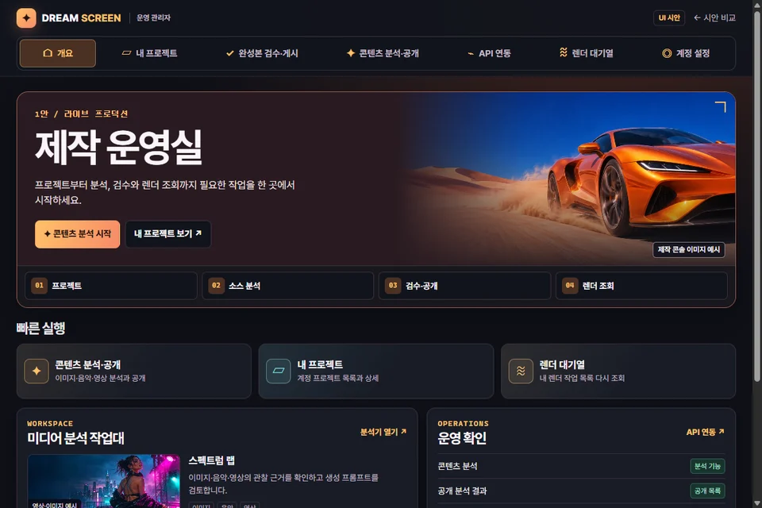

DREAM SCREEN / 관리자 디자인 시안
멀티미디어 관리자 UI 3가지
프로젝트, 콘텐츠 분석, 공개, 렌더 관리까지. 같은 상단 메뉴에서 출발하는 세 가지 운영 화면을 비교해 보세요.
시안의 메뉴와 조작을 눌러 볼 수 있습니다. 샘플 화면에서는 운영 데이터가 바뀌지 않습니다.
DREAM SCREEN / 관리자 디자인 시안
프로젝트, 콘텐츠 분석, 공개, 렌더 관리까지. 같은 상단 메뉴에서 출발하는 세 가지 운영 화면을 비교해 보세요.
시안의 메뉴와 조작을 눌러 볼 수 있습니다. 샘플 화면에서는 운영 데이터가 바뀌지 않습니다.